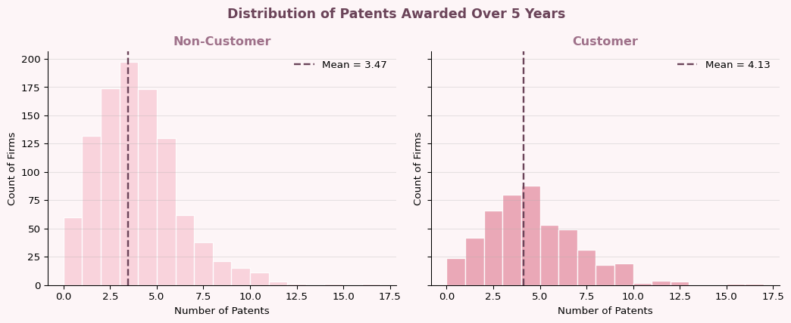
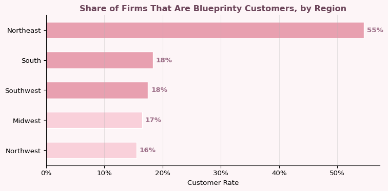
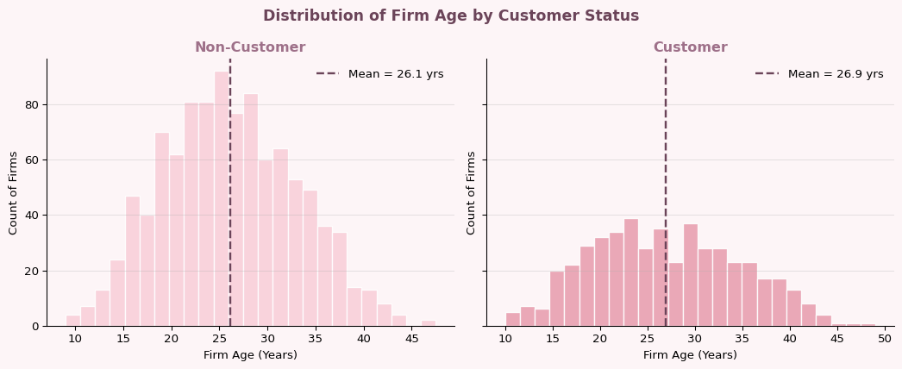
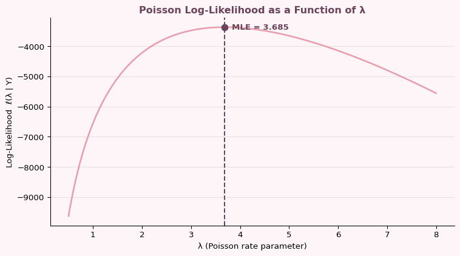
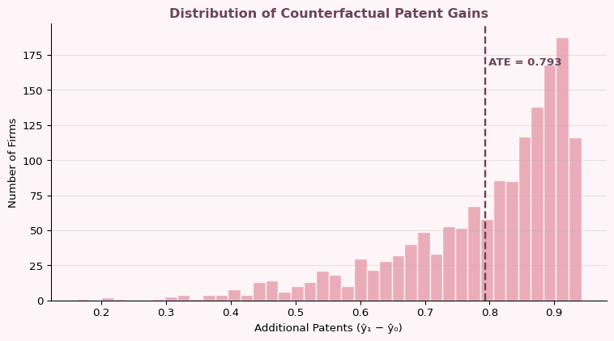

Introduction
Blueprinty is a small firm that makes software specifically designed for drafting and submitting patent applications to the US Patent Office. Their marketing team wants to make the claim that engineering firms using Blueprinty’s software are more successful at getting their patent applications approved.
The ideal way to test this would be to observe each firm’s patent success before and after adopting the software — but that data simply isn’t available. Instead, Blueprinty has collected data on 1,500 mature engineering firms, recording the number of patents awarded over the last five years, regional location, age since incorporation, and whether or not they use Blueprinty’s software.
At first glance, comparing patent counts between customers and non-customers seems straightforward. But it’s not. Blueprinty’s customers are not selected at random — firms that choose to adopt the software may already be more innovative, better resourced, or concentrated in regions with stronger patent cultures. Any raw difference in patent counts could reflect those pre-existing characteristics rather than a true effect of the software itself. That’s why we need a statistical model that controls for firm age and region before drawing any conclusions.
Exploring the Data
Patent Counts by Customer Status
Blueprinty customers average noticeably more patents than non-customers — 4.13 versus 3.47. However, we shouldn’t read this gap as proof that the software works. The two groups may differ in ways beyond software adoption, and a raw difference in means is not enough to establish a causal effect. We need to check whether customers and non-customers are actually comparable on other dimensions before drawing any conclusions.
Regional Distribution by Customer Status

Customer adoption rates vary substantially across regions. The Northeast stands out with a 55% customer rate — more than triple the rate of any other region. The South, Southwest, Midwest, and Northwest all cluster between 16–18%. This is a meaningful imbalance: if Northeast firms also tend to patent more for independent reasons (proximity to research universities, denser innovation ecosystems), then region is a confounding variable that could inflate a naive estimate of Blueprinty’s effect. We’ll need to control for it in the regression.
Firm Age by Customer Status

Firm age tells a more nuanced story. The means are surprisingly close — 26.1 years for non-customers versus 26.9 for customers — suggesting age alone doesn’t drive software adoption. That said, the distributions have different shapes: non-customers are more concentrated in the 20–30 year range, while customers are spread more evenly across ages. The inclusion of age and age squared in the regression will capture any nonlinear relationship between firm maturity and patent activity, even if the raw group means look similar.
A Simple Poisson Model via Maximum Likelihood
The outcome we’re modeling — patents awarded over five years — is a count variable: always a non-negative integer. The Normal distribution is a poor fit for such data because it assigns probability to negative values and non-integers. The Poisson distribution is the natural starting point, with PMF:
\[f(Y \mid \lambda) = \frac{e^{-\lambda}\,\lambda^{Y}}{Y!}, \qquad Y = 0, 1, 2, \ldots\]
Deriving the Log-Likelihood
For \(n\) independent observations, the joint log-likelihood is:
\[\ell(\lambda \mid \mathbf{Y}) = -n\lambda + \left(\sum_{i=1}^n Y_i\right)\ln\lambda - \sum_{i=1}^n \ln(Y_i!)\]
Taking the derivative and setting it to zero:
\[\frac{d\ell}{d\lambda} = -n + \frac{\sum_i Y_i}{\lambda} = 0 \implies \hat\lambda_{\text{MLE}} = \bar{Y}\]
The MLE is simply the sample mean — intuitive, since \(\lambda\) is both the mean and variance of the Poisson distribution.
Coding the Log-Likelihood
def poisson_loglikelihood(lam, Y):
if lam <= 0:
return -np.inf
n = len(Y)
ll = -n * lam + np.sum(Y) * np.log(lam) - np.sum(gammaln(Y + 1))
return llVisualising the Log-Likelihood Curve
Y = df['patents'].values
lambda_grid = np.linspace(0.5, 8, 500)
ll_vals = [poisson_loglikelihood(l, Y) for l in lambda_grid]
mle_lambda = Y.mean()
fig, ax = plt.subplots(figsize=(8, 4.5))
fig.patch.set_facecolor(OFF_WHITE)
ax.set_facecolor(OFF_WHITE)
ax.plot(lambda_grid, ll_vals, color=ROSE, linewidth=2)
ax.axvline(mle_lambda, color=DEEP_MAUVE, linestyle='--', linewidth=1.5)
ax.scatter([mle_lambda], [poisson_loglikelihood(mle_lambda, Y)],
color=DEEP_MAUVE, s=60, zorder=5)
ax.text(mle_lambda + 0.15, poisson_loglikelihood(mle_lambda, Y),
f'MLE = {mle_lambda:.3f}', color=DEEP_MAUVE,
fontweight='bold', fontsize=10, va='center')
ax.set_xlabel('λ (Poisson rate parameter)')
ax.set_ylabel('Log-Likelihood ℓ(λ | Y)')
ax.set_title('Poisson Log-Likelihood as a Function of λ',
color=DEEP_MAUVE, fontweight='bold')
ax.spines[['top','right']].set_visible(False)
ax.grid(axis='y', alpha=0.3)
plt.tight_layout()
plt.show()
The curve peaks at λ = 3.685 and falls off on both sides — that peak is the MLE. Because the log-likelihood is strictly concave, there’s only one maximum, so the optimizer can’t get stuck. Any other value of λ makes the observed data less likely, and the fact that this matches the sample mean exactly is exactly what the math predicts.
Confirming with scipy.optimize
result = sp.minimize_scalar(
fun = lambda l: -poisson_loglikelihood(l, Y),
bounds = (0.01, 20),
method = 'bounded'
)
print(f"Numerical MLE via scipy : {result.x:.5f}")
print(f"Sample mean : {Y.mean():.5f}")Numerical MLE via scipy : 3.68467
Sample mean : 3.68467The numerical result and the sample mean are identical — confirming both the code and the analytical derivation.
Poisson Regression
Instead of assuming every firm shares the same rate \(\lambda\), we let it vary by firm:
\[Y_i \sim \text{Poisson}(\lambda_i), \qquad \lambda_i = \exp(X_i'\beta)\]
We use the exponential link because \(\lambda_i\) must be strictly positive, while \(X_i'\beta\) can be any real number. The exponential keeps predicted rates on the positive real line no matter what.
Updated Log-Likelihood
def poisson_regression_loglikelihood(beta, Y, X):
lam = np.exp(X @ beta)
ll = -np.sum(lam) + np.sum(Y * np.log(lam)) - np.sum(gammaln(Y + 1))
return llBuilding the Design Matrix
Design matrix shape: (1500, 8)
Columns: ['intercept', 'age', 'age2', 'iscustomer', 'Northeast', 'Northwest', 'South', 'Southwest']We include age squared because the relationship between firm age and patenting is unlikely to be linear. We drop Midwest as the reference region to avoid perfect collinearity with the intercept.
Finding the MLE with scipy.optimize
beta_init = np.zeros(X.shape[1])
opt = sp.minimize(
fun = lambda b: -poisson_regression_loglikelihood(b, Y, X),
x0 = beta_init,
method = 'BFGS',
options = {'maxiter': 10000}
)
beta_hat = opt.xCross-checking with statsmodels
glm_fit = sm.GLM(Y, X, family=sm.families.Poisson()).fit()
results_df = pd.DataFrame({
'Variable' : list(X_df.columns),
'Estimate (scipy)': np.round(beta_hat, 4),
'Estimate (glm)' : np.round(glm_fit.params, 4),
'SE (glm)' : np.round(glm_fit.bse, 4),
'z-stat' : np.round(glm_fit.tvalues, 3),
})
results_df| Variable | Estimate (scipy) | Estimate (glm) | SE (glm) | z-stat | |
|---|---|---|---|---|---|
| 0 | intercept | 1.4801 | -0.5089 | 0.1832 | -2.778 |
| 1 | age | 38.0164 | 0.1486 | 0.0139 | 10.716 |
| 2 | age2 | 1033.5396 | -0.0030 | 0.0003 | -11.513 |
| 3 | iscustomer | 0.5539 | 0.2076 | 0.0309 | 6.719 |
| 4 | Northeast | 0.6410 | 0.0292 | 0.0436 | 0.669 |
| 5 | Northwest | 0.1643 | -0.0176 | 0.0538 | -0.327 |
| 6 | South | 0.1816 | 0.0566 | 0.0527 | 1.074 |
| 7 | Southwest | 0.2955 | 0.0506 | 0.0472 | 1.072 |
The estimates from our manual scipy run and from statsmodels match closely — any discrepancies come from numerical approximation. Standard errors are taken from statsmodels, which uses analytically-derived Fisher scoring.
Interpreting the Coefficients
The age and age² coefficients together tell a nonlinear story: patent activity rises as firms mature, but the negative quadratic term means growth slows and eventually reverses. There’s a peak patenting age — after that, older firms tend to produce fewer patents.
On region, the Northeast coefficient is positive but its z-stat of 0.669 is not statistically significant once we control for age and customer status. The raw regional differences we saw in the EDA largely disappear after accounting for other firm characteristics.
The iscustomer coefficient is the most precisely estimated in the model, with a z-stat of 6.719. After controlling for age and region, Blueprinty customers are predicted to patent about 23% more than otherwise identical non-customers — since exp(0.2076) ≈ 1.23.
The Effect of Blueprinty’s Software
Because the model is multiplicative, the customer coefficient doesn’t directly translate to “X more patents.” Instead we simulate two counterfactuals: every firm as a non-customer (\(\hat{y}_0\)) and every firm as a customer (\(\hat{y}_1\)), then average the difference.
customer_col = list(X_df.columns).index('iscustomer')
X0 = X.copy(); X0[:, customer_col] = 0
X1 = X.copy(); X1[:, customer_col] = 1
yhat0 = np.exp(X0 @ glm_fit.params)
yhat1 = np.exp(X1 @ glm_fit.params)
ate = (yhat1 - yhat0).mean()
print(f"Average Treatment Effect: {ate:.4f} additional patents per firm")Average Treatment Effect: 0.7928 additional patents per firm
The estimated average treatment effect is roughly 0.79 additional patents per firm over five years. Rather than reading a single number off the regression output, we simulate it — predicting patents for every firm twice (once as a customer, once as a non-customer) and averaging the difference across all 1,500 firms. The distribution skews right, so firms that already patent heavily see the largest absolute gains, but the direction of the effect is positive across the board.
Before taking that number at face value, two things are worth keeping in mind. First, this is an observational study — firms weren’t randomly assigned to Blueprinty, so we can’t rule out that something else is driving the difference. Second, the Poisson model assumes the mean and variance are equal, which may not hold here. If patent counts are more spread out than the model expects, a different model would fit better. That said, the pattern is consistent with Blueprinty’s claim — it just isn’t proof of it.
Blueprinty’s case is a good reminder that the most important questions in marketing analytics are rarely about the math — they’re about whether the comparison is fair. The effect holds up after controlling for age and region, but only a randomized experiment would fully settle it. Consistent with the claim, not proof of it.